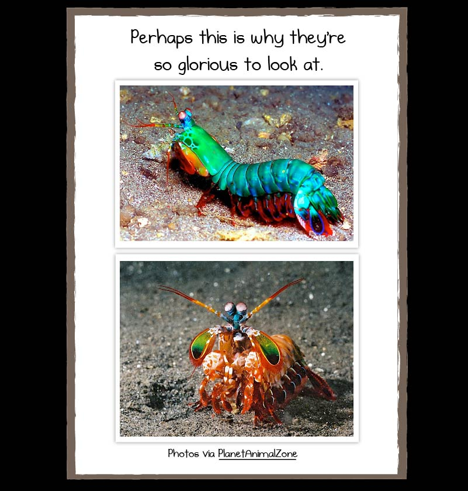
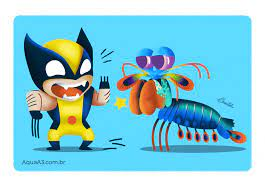

Fatos sobre Stomatopoda
Informações geréricas
Esse ser peculiar de nome formal: Odontodactylus scyllarus mais popularmente chamados de tamarutacas ou de lacraias-do-mar no Brasil, é uma ordem de crustáceos marinhos da subclasse Hoplocarida, que agrupa cerca de 400 espécies, caracterizadas principalmente pela morfologia da segunda pata torácica, que é modificada em apêndice subquelado, lembrando uma pata de louva-a-deus.
- Reino: Animalia
- Filo: Arthropoda
- Subfilo: Crustacea
- Classe: Malacostraca
- Subclasse: Hoplocarida
- Ordem: Stomatopoda
Arco-irís animal
Ele tem uma capacidade impressionante de se maquiar conseguindo ter esse estilo bonitão
Você com certeza perderia uma disputa de velho oeste com ele
Suas patas frontais conseguem acelerar com a mesma velocidade que uma calibre 22, então se um dia quiser comprar uma briga que não seja com nosso "amigo" colorido
Poderzinho de desenho
Ainda por cima ele vem com um poder que sai luzinha, quando ataca suas vitimas, o movimento é tão violento que gera energia suficiente para gerar uma pequena faisca de luminosidade, deixando-o ainda mais divertido